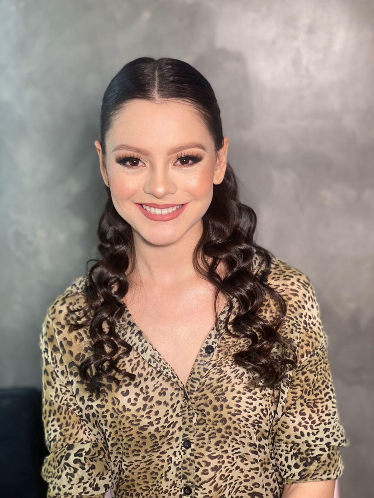

SERPRO
QA Júnior • 2025
Testes manuais e exploratórios no sistema de compras do Governo Federal, criando casos de teste e reportando bugs.
Ver Experiência →
Focada em garantir qualidade, identificar falhas e melhorar a experiência do usuário.
Download CVSou estudante de Computação com experiência prática em testes de software, atuando na execução de testes manuais, criação de casos de teste e reporte de bugs. Tenho foco em garantir a qualidade das entregas e melhorar a experiência do usuário por meio de validações detalhadas e análise de requisitos.
Minha trajetória na tecnologia começou com suporte técnico e infraestrutura, onde desenvolvi uma visão prática do uso real dos sistemas e da importância da estabilidade. Em seguida, atuei com desenvolvimento e manutenção de sistemas, o que me proporcionou entendimento de código, lógica e funcionamento interno das aplicações.
Foi na área de Qualidade de Software que encontrei meu foco profissional. Atualmente, atuo com testes funcionais, exploratórios e regressivos, colaborando com desenvolvedores para identificar falhas, validar funcionalidades e garantir sistemas mais confiáveis e eficientes.
Ano de Experiência
Casos de Teste
Bugs Encontrados
Conheça meu percurso na tecnologia e como cada experiência me moldou como profissional de QA
QA Júnior • 2025
Testes manuais e exploratórios no sistema de compras do Governo Federal, criando casos de teste e reportando bugs.
Ver Experiência →Análise e Sustentação • 2023-2024
Análise de problemas, manutenção de sistemas legados e desenvolvimento de melhorias.
Ver Experiência →Estagiária • 2022-2023
Monitoramento de infraestrutura, desempenho de sistemas e documentação de processos técnicos.
Ver Experiência →Estagiária de Suporte • 2023 - 2024
Suporte técnico especializado com foco em resolução de incidentes e validação de sistemas.
Ver Experiência →